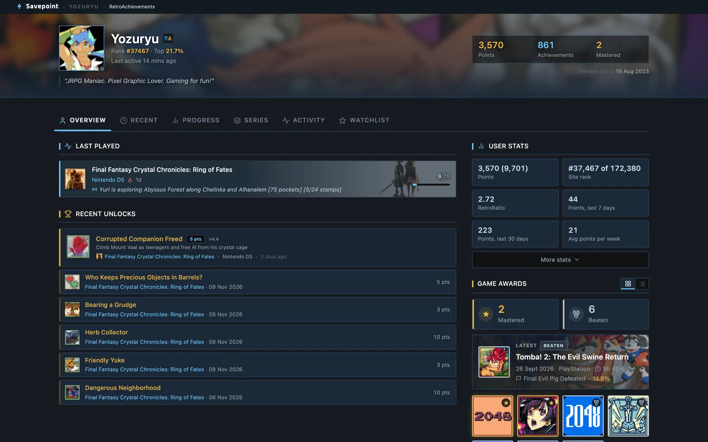
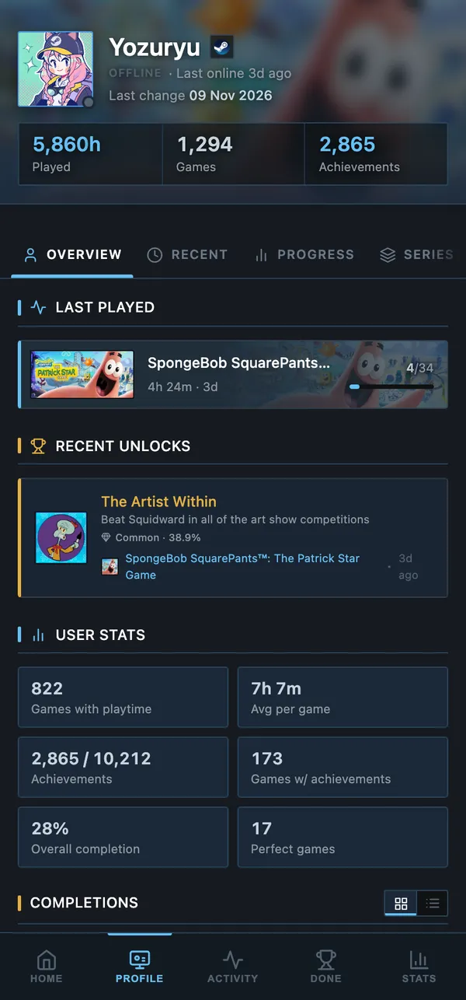
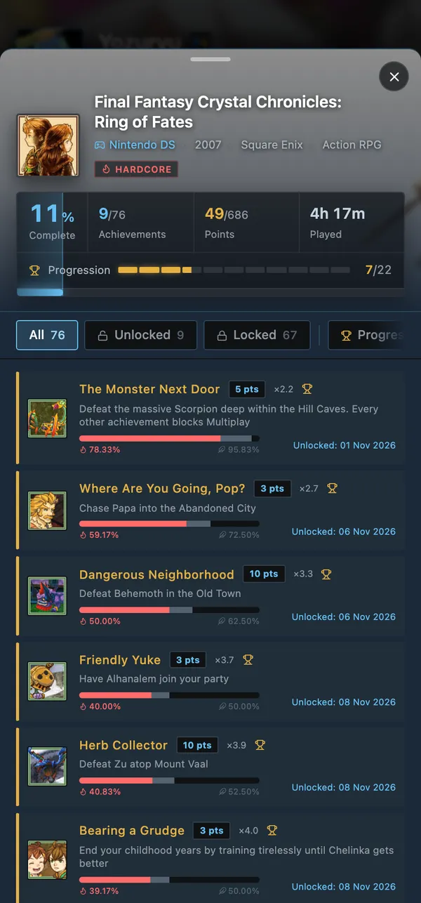
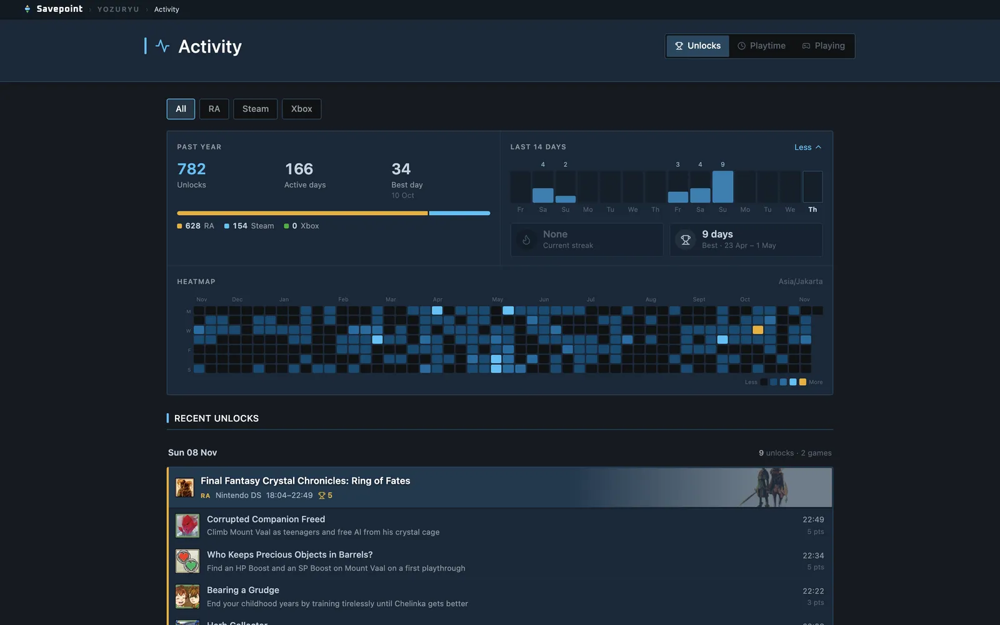
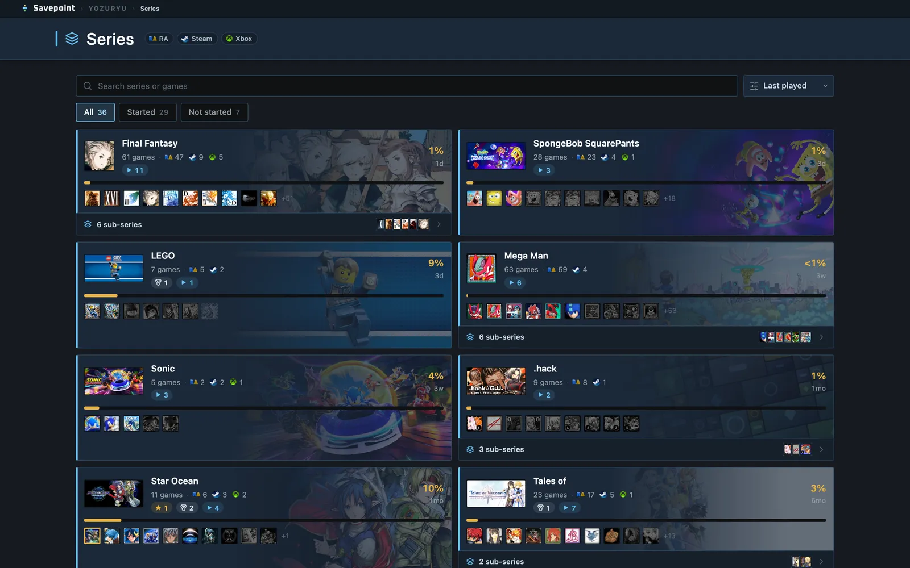

Profiles
A full profile per platform
Every game with its achievements and rarity, and tabs for progress, recent activity and series.

Savepoint gathers your RetroAchievements, Steam and Xbox achievements, playtime and completions into one site that updates itself every hour, hosted free on your own GitHub.


Built for your phone first, and roomy on a big screen. Every page reads your own data, refreshed every hour.
Every game with its achievements and rarity, and tabs for progress, recent activity and series.

Each platform keeps its own numbers, like Steam rarity and Xbox gamerscore, in one familiar layout.

Sessions from your playtime, unlocks day by day, the games in rotation.

Tap any game for its achievements, rarity and progress in one sheet.

Group games into series and sub-series, with progress for each.

Every finished game from every platform on one timeline, with its rarest achievement.

Edit series, pick art, set win conditions, start data runs and publish. Never deployed.

Fresh data every hour from GitHub Actions, or every 30 minutes with a free external cron.
Hosted on GitHub Pages. No server, no database, no account anywhere else.
Install it on your phone from the browser; it opens full screen and works offline.
Every play session from RetroAchievements and Steam is logged, so Savepoint can show when you play, which game took your time, your rarest unlocks and the games you came back to.
Live: the author's last 3 monthsLifetime playtime from RetroAchievements and Steam turns into real sessions: when you started, how long you stayed, and what you unlocked on the way.
Open Activity in the live demo
Mastered, perfect and beaten games from every platform, newest first, each with the achievement that finished it.
Open Completions in the live demo
Group games from every platform into a series and watch it fill in: finished in gold, beaten in silver, started in blue.
Open Series in the live demo
This is the author's own Savepoint, running live. Tap around: open a game, switch tabs, scroll the activity.
Everything runs on free GitHub features. Your keys stay in encrypted secrets; the site is plain files that read your data.
RetroAchievements, Steam and OpenXBL keys go into your repository's Actions secrets.
Every hour it fetches your profiles and commits only what changed to a data branch.
When data changed, the site is deployed with it. Free for public repositories.
Open it anywhere, or install it as an app. It refreshes itself in the background.
All in the browser, nothing to install. The docs walk you through each step and fill in your own names as you go.
savepointconfig.json
Free, open source and yours: the code, the data and the address.